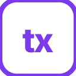

Each shown at favicon size (16, 32) and larger (96, 128). Tell me which letter (A/B/C/D) and I'll wire it up.
Most legible at 16px. Geometric, app-icon style. Works as both favicon and Android launcher.
Explicit wardrobe metaphor. Detail may blur at 16px but reads clearly from 32px up.
Friendlier, social-app feel (Threads / Bluesky vibe). Strong contrast at all sizes.

Lowercase "tx" inside an outlined tile. More typographic / editorial. Subtler in browser tabs.